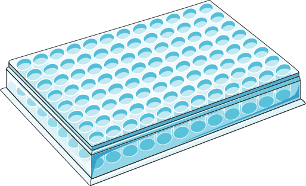
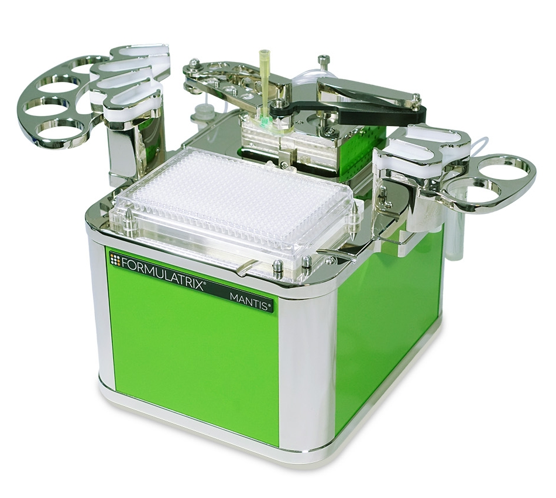
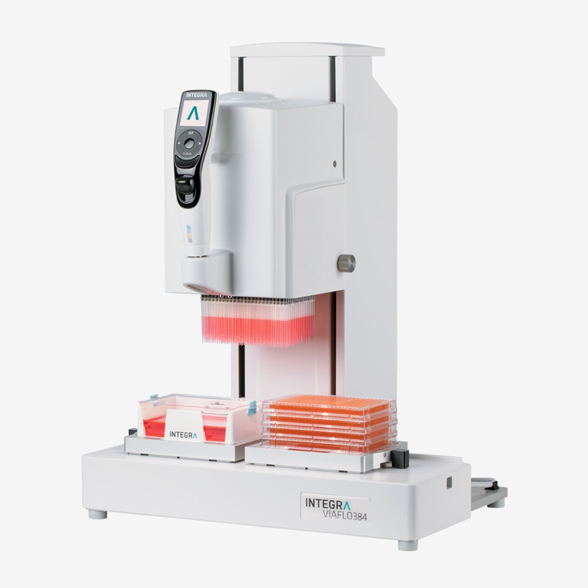
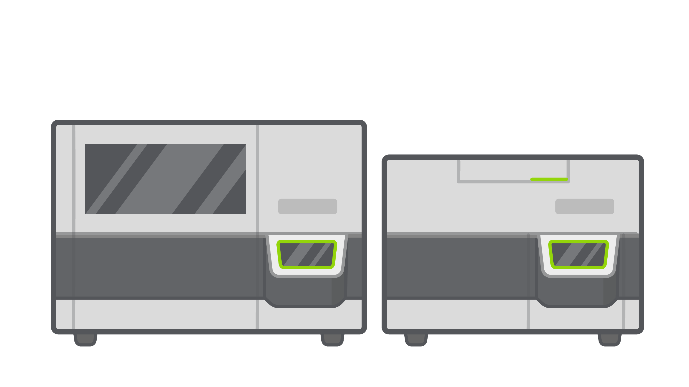

Primary Erythroid Cell Culture Development

Phase 1: Expansion
Days -4 – 0
CD34+ cells
Recovery / Maintenance Medium
→

Phase 2: Differentiation
Days 0 – 10
Compound addition
Cytokine cocktail addition for differentiation to erythrocytes
96-well plates

Celesta
Count
Count

Mantis
Normalize
Normalize

Viaflo
Transfer
Transfer
→

Nanostring
nCounter
nCounter

EnVision
alphaLISA
alphaLISA
Phase 3: Readout
Day 10
Cell harvest
Dual platform analysis